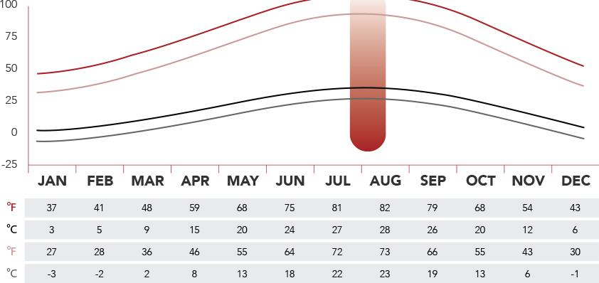

Wanda Studios offers acres of Qingdao’s diverse landscape and stunning, built-to-order sceneries for all production exterior shoots.
T-lots
With a multitude of customizable options throughout the facility, temporary “T-” lots can cover the expanse of every imagination.
Backlots
Wanda Studios offers acres of Qingdao’s diverse landscape and stunning, built-to-order sceneries for all production exterior shoots.
T-lots
With a multitude of customizable options throughout the facility, temporary “T-” lots can cover the expanse of every imagination.
About Qingdao
Best known for its Tsingtao Brewery, Qingdao brags to be one of the fastest in GDP growth among cities in China during the last decade. Qingdao's economic success has been bolstered by flourishing local businesses and large foreign direct investments, due in part to geographic proximity to Japan and Korea, and in part to cultural ties as a former German colony. Qingdao is also a significant coastal port city – the country's fifth-largest, and the world’s seventh-largest seaport.
Japan conquered the city after declaring war on Germany.
1938
Japan conquered the region.
Location Information
City location:
35 ° 35' to 37 ° 09' N and 119 ° 30' to 121 ° 00' E; East China
City population:
8,715,000
North to south distance:
117 km (73 mi)
East to west distance:
54 km (33 mi)
City center:
Shinan District (36.0N, 120.37E)
Surroundings
Qingdao boasts historic European and modern Asian architecture, with scenic destinations of mountains, rivers, reservoirs and wetlands. It is home to the longest sea bridge that links Qingdao and Huangdao.
Home to China’s most internationally well-known brewery, Tsingtao Beer, and to reputable, multinational consumer electronics and home appliances corporation, Haier.
Qingdao is a major seaport, naval base and vital economic center in China. It is rich in history and vibrant with global tourism.
In recent years, Qingdao’s development has been sparked by the government’s establishment of the Blue Economic Zone – designed to attract the high-tech industry. The zone focuses on developing modern infrastructure to support advanced manufacturing, including cutting-edge goods production to strengthen Qingdao’s position as a key regional economic center. Today, focus is also given to cultural and entertainment growth in Qingdao and Huangdao.
Qingdao is a major seaport, naval base and vital economic center in China. It is rich in history and vibrant with global tourism.
In recent years, Qingdao’s development has been sparked by the government’s establishment of the Blue Economic Zone – designed to attract the high-tech industry. The zone focuses on developing modern infrastructure to support advanced manufacturing, including cutting-edge goods production to strengthen Qingdao’s position as a key regional economic center. Today, focus is also given to cultural and entertainment growth in Qingdao and Huangdao.
Qingdao is a major seaport, naval base and vital economic center in China. It is rich in history and vibrant with global tourism.
In recent years, Qingdao’s development has been sparked by the government’s establishment of the Blue Economic Zone – designed to attract the high-tech industry. The zone focuses on developing modern infrastructure to support advanced manufacturing, including cutting-edge goods production to strengthen Qingdao’s position as a key regional economic center. Today, focus is also given to cultural and entertainment growth in Qingdao and Huangdao.
Qingdao Goverment
Huangdao Goverment
West Coast Development Group

Seasons and Climate
Qingdao features a continental climate with four distinct seasons. While the spring and fall display beautiful scenes of nature and a mild climate, winter is generally cold and dry with frosty nights; and summer, hot and sultry.
International Travel Times Around The world
Qingdao
10:30 AM
Hollywood
10:30 AM
12-15 Hours
Asia
QingdaoBeijing (1 Hours)
QingdaoShanghai (1 Hours)
QingdaoHongkong (1 Hours)
USA
QingdaoLos Angeles (12 Hours)
QingdaoNew York (15 Hours)
QingdaoOther City (00 Hours)
Europe
QingdaoParis (11 Hours)
QingdaoOther City (00 Hours)
QingdaoOther City (00 Hours)
A Lifestyle Destination
Wanda Studios Qingdao is the centerpiece of the Qingdao Oriental Movie Metropolis, which is the largest entertainment infrastructure project ever undertaken. The project spreads across 476 hectares (4.76 square kilometers), with a total floor space of 5.4 million square meters. It features 4-5 star hotels, seaside resorts, apartments, international hospitals, shopping malls, yacht clubs, 300 berths, an indoor ice rink, museums, schools, retail outlets, a strip of waterfront bars and restaurants, and much, much more.